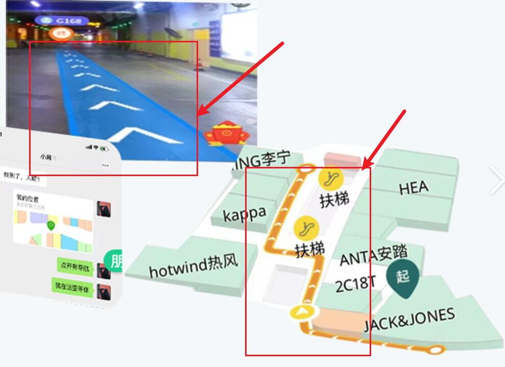
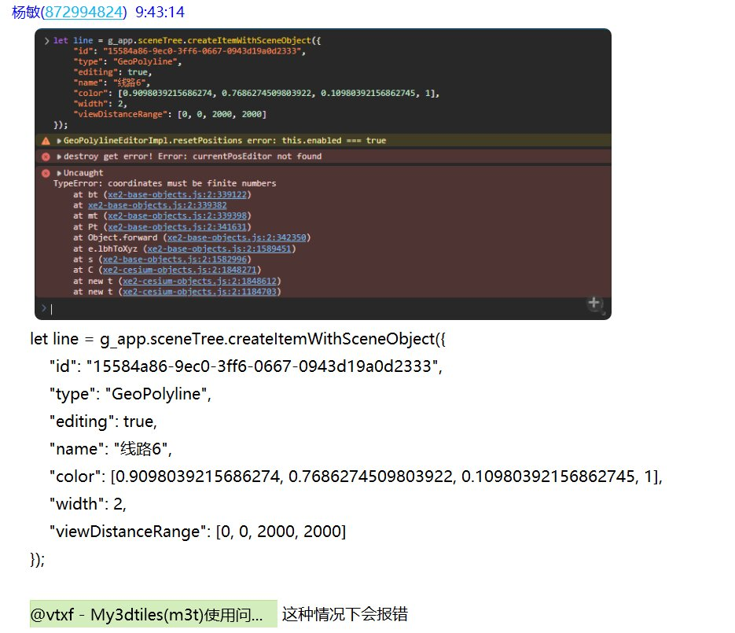
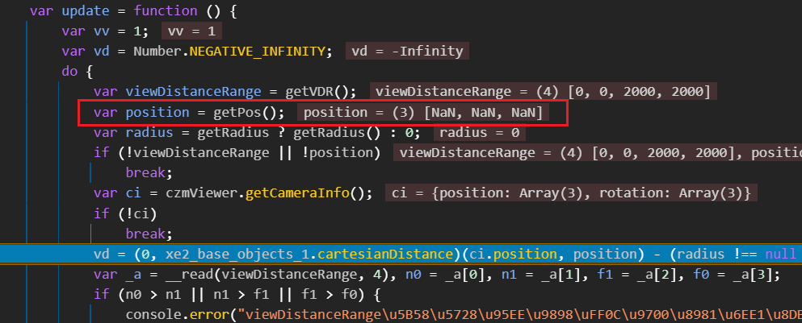
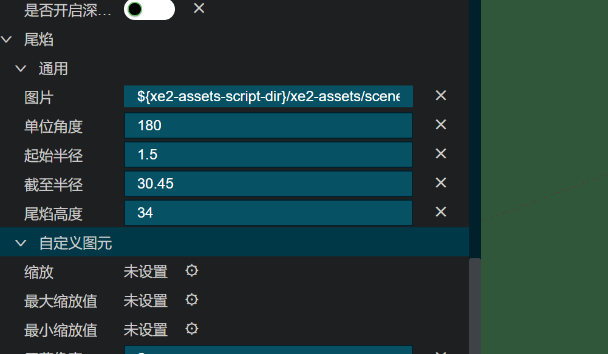
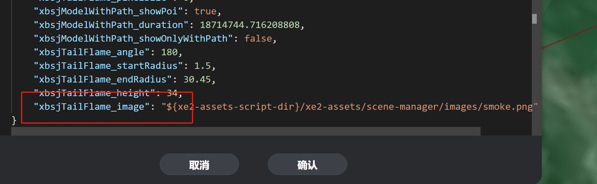
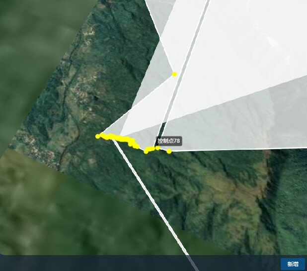

开发计划
2024-12-31 08:46:37
- [ ] 场景树/示例/资源等地方需要增加搜索框
- [ ] 这个收藏，可以提示收藏的场景名称，不然不知道这个加载收藏加载的是什么
- [ ] 点击收藏夹切换场景时，需要提示切换场景，再确定，避免用户误触
- [ ] 需要增加一个场景的默认视角
- [ ] 示例集合左边这个树面板太窄看，看不全，面板宽度不可调；鼠标移上去这个文字tooltip可以和缩略图放到一个里面好一点
- [ ] 示例集合手机版适配
- [ ] 新建场景提供若干个模板，满足不同的应用场景。
2024-12-04 18:30:45
- [ ] 读取照片的坐标数据直接把照片放到该坐标么
2024-10-16 14:06:48
- [ ] 场景对象创建/影像加载/地形加载的UI改造
- [ ] 可移动窗口
- [ ] MyWebSocketClient使用说明
- [ ] MyWebSocketClient链接时通不过的处理办法
2024-10-08 07:14:31
- [ ] 电子围栏
- [ ] 文字图片
- [ ] Echarts图标贴地
- [ ] 多个gltf合并成3dtiles
2024-09-27 08:01:45
- [ ] 保存成网页！ SD问题处理！
- [ ] UI交互改造
- [ ] 地形影像加载优化
- [ ] cesiumlab接入
- [ ] 3dtiles的style改造！
- [ ] 电子围栏
2024-09-25 09:32:53
- [ ] 拾取弹窗需要一个说明文档
- [ ]
2024-09-20 15:26:48
- [ ] mySceneObjectPicking还有enabled的问题
- [ ] getFuncFromStr改造！
- [ ] reactArrayWithUndefined中的undefined改造！
- [ ] JsonWithComments改造！
2024-09-12 17:56:24
- [ ] 拾取弹窗功能必须开发了！
2024-08-24 10:11:23
- [ ] 3d导航线

2024-08-15 13:49:12
- [ ] style设置存在问题 修复style设置之后，再设置为undefined以后就崩溃的问题
2024-08-08 15:32:22
- [ ] 场景树节点的右键菜单中加入 打开JSON配置信息 的命令。
- [ ] 想办法简化本地影像数据加载
2024-08-06 13:45:53
- [ ] CzmPoint不能被拾取
2024-08-05 15:47:44
- [ ] 录制视频：m3t中使用geojson制作流线
2024-08-05 09:50:54

let line = g_app.sceneTree.createItemWithSceneObject({
"id": "15584a86-9ec0-3ff6-0667-0943d19a0d2333",
"type": "GeoPolyline",
"editing": true,
"name": "线路6",
"color": [0.9098039215686274, 0.7686274509803922, 0.10980392156862745, 1],
"width": 2,
"viewDistanceRange": [0, 0, 2000, 2000]
});
2024-08-04 07:44:32
- [ ] 视频融合点选总是点击到地底下！
2024-07-31 15:08:10
- [ ] 3dtiles数据加载后拾取选中对象加弹窗定制！
2024-07-30 10:34:48
- [ ] 没有粘贴内容时，右键菜单不要显示粘贴命令
2024-07-27 23:13:59
- [ ] ghldj：剖切线需要提供计算的函数，而不是自动计算
2024-07-25 21:32:41
- [ ] ym: 视域范围问题，贴地线也有这个问题
let line = g_app.sceneTree.createItemWithSceneObject({
id: '12313',
type: 'GeoPolyline',
editing: false,
name: '折线test',
positions: [
[
120.3137355703927,
31.62619030792205,
16.88355341073519
],
[
120.31463593243917,
31.626412383139137,
15.153796897629555
],
[
120.31512833594367,
31.625801152512473,
7.343413594556383
]
],
"ground": true,
"viewDistanceRange": [
0,
0,
2000,
2000
], })
@vtxf - My3dtiles(m3t)使用问题找我 视域范围问题，贴地线也有这个问题2024-07-25 16:10:45
- [ ] zyj 二维码过期
- [ ] ghldj xbsjmissile接口待验证


- [ ] ghldj 多边形交互问题

之前
- [ ] 场景树还有两个问题：
- Ctrl + A 要做到全选
- Shift如果看不到选中项，就不会连续多选，需要修改
- [ ] 属性表中的函数名，要写到提示中，避免别人不知道调用的什么方法
- [ ] gltf转3dtiles
- [ ] ym：剖切框需要深度检测设置，还有填充面大文件已外迁网盘：演示视频
20240715-182954-开发计划录屏.mp4体积超过 3MB，未随文档入库，请到百度网盘「My3dtiles资料附件」条目取回。
优先完善
- [ ] UI基本功能完善
- [ ] 基本图形创建
- [ ] POI创建
- [ ] 测量 距离测量和面积测量
- [ ] 状态栏完善
- [ ] 3dtiles数据的状态信息展示
- [ ] 3dtiles数据的点击弹窗
- [ ] 集成CesiumLab服务
- [ ] 需要非常多的示例代码
- [ ] 3dtiles数据点选弹出属性窗口
- [ ] 树结构重新改造
- [ ] ym：另外加载数据那块，我建议你可以单独加一个在线服务，无缝集成cesiumlab的服务，因为用这个软件的很多用户都是从cesiumlab过渡过来，如果加载地形，影像，3dtiles切片，直接读取服务配置，操作上就简单很多了。这个对你这来说也是非常容易的事情
- [ ] 自动解析文件夹中存在的3dtiles数据，自动按照文件夹的目录加载到场景结构树上。